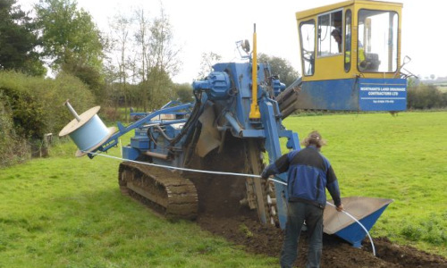
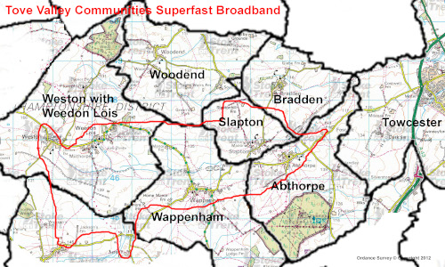
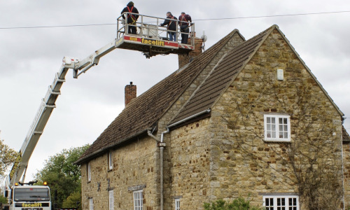

What we do
Abthorpe Broadband Association Limited - a not-for-profit limited by guarantee company - is a volunteer run organisation and has been connecting houses to fibre-optic broadband with up to 1,000Mbps unrestricted symmetrical service to our Members. In late 2023 there were around 500 such connections, funded by the government's Rural Gigabit Voucher Scheme.
Tove Valley Broadband or TVB as it has come to be known, brings a very fast 10,000Mbps symetrical fibre-optic internet connection into the villages and distributes connections to properties by fibre-optics or by radio. Our service is unrestricted but Members sign up to a "fair use" agreement.
The infrastructure cables are rodent proof 9mm corrugated steel armoured outer containing a loose tube of 12 fibre-optic strands. Any strain on the outer tube should not damage the fibres - at least that's the theory.
We bury the cable between 0.5 and 1.0m deep depending upon the ground use and sometimes more for special circumstances. With 3" of soil pushed back over the cable, we lay a green tape, then re-fill the trench, finally seeding the surface. It is generally not possible to see where we have been within 4 months of the construction.
At strategic points we construct an inspection chamber which eventually contains fibre junctions and feeds to properties. We have a variation of cables availble to feed the properties from thin tuff cables to water pipes and drainage ducts which can contain fibre cables.


